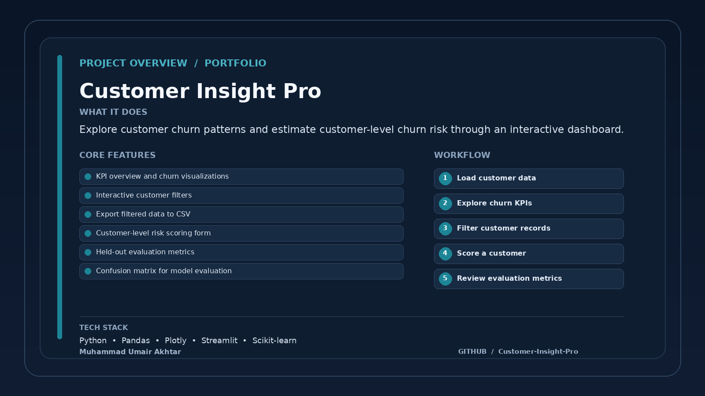

PROJECT 04 / PORTFOLIO
Customer Insight Pro
Explore customer churn patterns and estimate customer-level churn risk through an interactive dashboard.

Project Overview
Explore customer churn patterns and estimate customer-level churn risk through an interactive dashboard.
Key Features
- KPI overview and churn visualizations
- Interactive customer filters
- Export filtered data to CSV
- Customer-level risk scoring form
- Held-out evaluation metrics
- Confusion matrix for model evaluation
Project Workflow
Load customer data → Explore churn KPIs → Filter customer records → Score a customer → Review evaluation metrics
Technologies Used
Scope & Notes
The repository documents demo-data and model limitations. Risk scores are model estimates, not guarantees about an individual customer.
Explore the code.
The complete source code and project files are available in the GitHub repository.
Open GitHub ↗